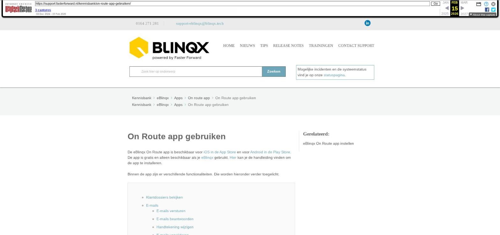

On Route app gebruiken

Tekstinhoud
On Route app gebruiken
De eBlinqx On Route app is beschikbaar voor iOS in de App Store en voor Android in de Play Store. De app is gratis en alleen beschikbaar als je eBlinqx gebruikt. Hier kan je de handleiding vinden om de app te installeren.
Binnen de app zijn er verschillende functionaliteiten. Die worden hieronder verder toegelicht.
Klantdossiers bekijken
E-mails
E-mails versturen
E-mails beantwoorden
Handtekening wijzigen
E-mails verwijderen
Taken klantdossier
Kalender
Document toevoegen
Volledig opnieuw inloggen
Let op! Rechten gebruiker niet hetzelfde
Klantdossiers bekijken
Het is mogelijk om een klantdossier in te zien. Wanneer je zoekt op een achternaam, wordt gelijk het juiste dossier met bijbehorende klantgegevens geopend. Daarnaast zie je ook alle lopende producten, het laatste e-mailverkeer en de producten gerelateerd aan dit dossier.
Overzicht klantdossiers
Gegevens in klantdossier
E-mails
Bij het tabblad e-mails heb je inzicht in jouw e-mailboxen uit eBlinqx. Je kiest hier het gewenste e-mailadres en de gewenste e-mailbox.
Daarnaast kan je de e-mails in een klantdossier bekijken.
E-mails in klantdossier
E-mails versturen
In de mailbox klik je op 'Nieuwe e-mail'. Vervolgens vul je een ontvanger en onderwerp in en voeg je tekst en eventuele bijlages toe.
De tekst in de e-mail is ook op te maken zo kan je bijvoorbeeld de tekst dikgedrukt, schuifgedrukt en onderstrepen.
Wanneer je via een dossier een nieuwe e-mail aanmaakt dan is het e-mailadres bij de ontvanger automatisch ingevuld. Ook staat het dossiernummer vermeld in de onderwerp van de e-mail.
Let op: om bijlages toe te voegen op iOS heb je minimaal versie iOS 12 of Android versie 1.8 nodig.
E-mail opstellen
E-mails beantwoorden
Je kan een ontvangen e-mail direct beantwoorden door rechtsboven op de reply-icoon te klikken.
Typ vervolgens je e-mailtekst bij 'E-mail opstellen'. Druk rechtsboven op het versturen-icoon om de e-mail te versturen.
Binnengekomen e-mail beantwoorden
Antwoord op e-mail typen en versturen
Handtekening wijzigen
Om je handtekening te wijzigen, ga je naar 'Instellingen' –> 'E-mail' en klik je onder 'Handtekening' op 'Verander handtekening'.
Als je nog geen handtekening hebt, klik je rechtsboven op het plus icoon om een handtekening toe te voegen.
Handtekening veranderen
Overzicht handtekeningen en nieuwe handtekening toevoegen (plusje rechtsboven)
Vervolgens typ je de gewenste tekst van je handtekening in, of pas je de bestaande tekst aan.
Zet het groene bolletje naar rechts (aan) om deze handtekening in te stellen als je standaard handtekening voor onder al je e-mails.
Klik op het vinkje rechtsboven om de zojuist gemaakte handtekening op te slaan. Zodra je dit hebt gedaan, zie je een overzicht van al je opgeslagen handtekeningen. Bij elke e-mail die je nu opstelt vanuit je On Route app, wordt deze handtekening gebruikt.
Handtekening typen en als standaard instellen
E-mails verwijderen
Het is niet mogelijk om e-mails in de On Route app te verwijderen. Dit kan alleen in eBlinqx.
Taken klantdossier
Onder een klantdossier – Taken bekijk je jouw taken van de klant en de gewenste dag. Via het plusicoon kan je een nieuwe taak aanmaken.
Voor iedere taak voer je de titel, start- en einddatum in. Ook is het mogelijk om tijdens het aanmaken de taak te annuleren en te verwijderen. Hierbij krijg je een melding of je zeker weet dat je deze actie wilt uitvoeren.
Het bekijken van openstaande en afgeronde taken/afspraken is ook mogelijk in het klantdossier.
Let op: Taken die gemaakt zijn vanaf de computer kan je niet bewerken in de app. Je kunt alleen de afspraken/taken bewerken die in de app zijn aangemaakt.
Taken in klantdossier
Taak toevoegen
Kalender
Via de de kalenderbekijk je snel jouw afspraken van de gewenste dag. Aan het aantal bolletjes onder het dagnummer zie je het aantal afspraken. Bij meer dan drie afspraken, staat er een plusicoon bij. Daarnaast is het mogelijk om nieuwe afspraken aan te maken.
Klik op het blauwe plusje om een afspraak aan te maken. Vul de titel, datum, tijd en omschrijving. Klik op het opslaan icoon rechtsboven om de afspraak vast te leggen.
Overzicht kalender afspraken
Nieuwe afspraak toevoegen
Document toevoegen
Wil je nog een document toevoegen aan een klantdossier? Ga dan naar een klantdossier en klik in het tabblad 'Documenten' op 'Toevoegen' rechtsboven. Je dient een foto te maken van het document. Maak de foto, geef het document een naam en voer het soort document in. Klik op toevoegen rechtsboven als je nog een foto wilt toevoegen. Zodra je op 'Opslaan' klikt worden de foto's opgeslagen in het klantdossier.
Document toevoegen aan klantdossier
Foto maken, naam document invoeren en opslaan
Volledig opnieuw inloggen
Je blijft een half jaar ingelogd in de eBlinqx On Route app. Na dit half jaar wordt gevraagd om volledig opnieuw in te loggen in de app.
Let op! Rechten gebruiker niet hetzelfde
In de app bestaan niet dezelfde rechten als in de eBlinqx omgeving op jouw computer. Wanneer een persoon recht heeft op een dossier, kan hij/zij het volledige dossier inzien. Het kan dus voorkomen dat iemand op de app bepaalde gegevens wel kan inzien, terwijl dit op de reguliere omgeving niet mogelijk is.
Laatste update: 15 oktober 2025
Was deze informatie nuttig?
Ja Nee